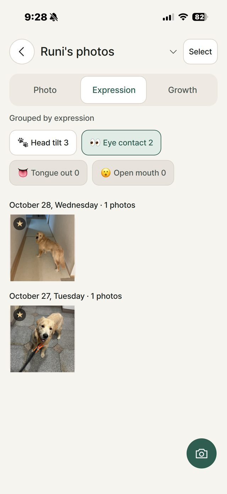
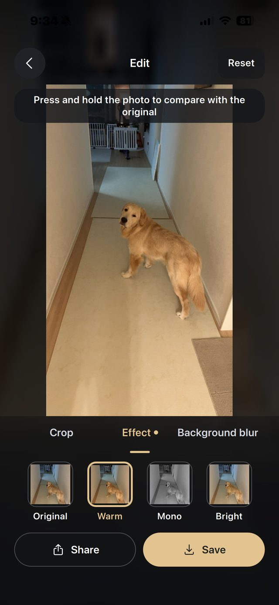

Dog camera for iPhone
Cute moments,
captured for you
Call your dog with a sound. DogShot spots the moment they look at the lens or tilt their head, shoots a silent burst and keeps the best 3.
Free to use · Try Pro free for 7 days · No ads
For the photo you keep missing
Auto capture Pro
Stand your phone at eye level. DogShot shoots by itself the moment your dog looks or tilts its head.
18 call sounds
Squeaky toys, a treat bag, kissy calls and more: high-pitched sounds dogs notice, a little different every time.
Only the best shots
A silent 3-second burst. Blurry and closed-eye frames are left out, and up to 3 best shots are picked.
Reaction clips
The few seconds your dog turns to the sound, saved as a short video with that sound.
Growth diary
Photos by day and by expression, a monthly calendar, and first vs. now side by side.
Quick edits
Crop for feed or stories, warm, mono or bright looks, and background blur that keeps your dog sharp.
How it works
- 1
Hold it at eye level
Hold or stand your iPhone at your dog's eye level.
- 2
Call with a sound
Tap a sound. If your dog doesn't react, DogShot calls once more with a different one.
- 3
Catch the look
Press the shutter when your dog looks, or let Auto shoot. Keep the best shots.
A look inside


Simple pricing
Free
No time limit
- Unlimited manual shooting with all 18 sounds
- Best-shot picks and expression albums
- Calendar and first vs. now
- One dog profile; saved photos carry a small watermark
DogShot Pro
Pay once, keep it
- Auto capture
- Watermark-free saving and sharing
- Save and share reaction clips
- Multiple dog profiles and the growth album
Try all of Pro free for 7 days. When the trial ends, Pro features simply lock. Nothing is charged automatically. The App Store shows the price for your region.
Private by design
- All analysis runs on your iPhone.
- No account, no ads, no tracking.
- Your photos are never uploaded to our servers.
Your dog's best look is a second away
Download DogShot and catch the next one.
Download on the App Store